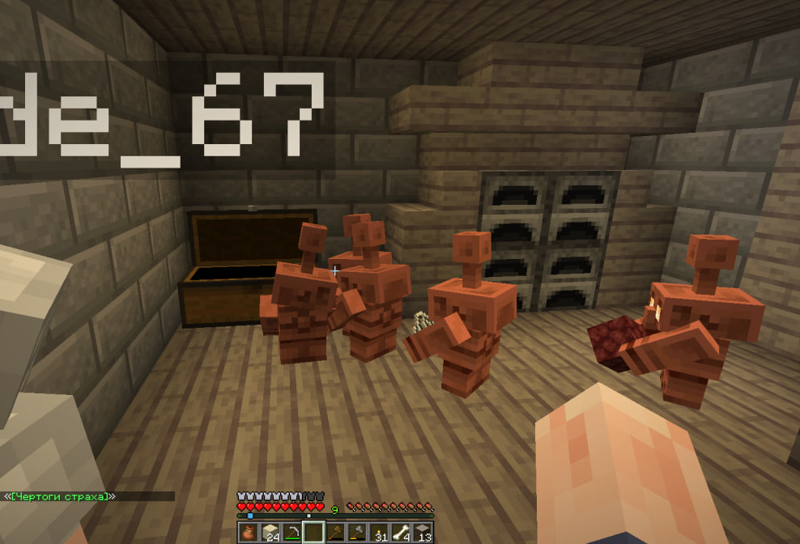

MINECRAFT MOD · FABRIC
DozaCraft.
Мод для твоего Minecraft. Выбери подходящую версию и скачай файл — без лишнего.
Последняя версия 1.2.4/Minecraft 26.3

DOZACRAFT / IN-GAMEDOWNLOADS
Версии
Выбери версию мода под свою версию Minecraft.
| Мод | Minecraft | Загрузчик | |
|---|---|---|---|
| 1.2.4 | 26.3 | Fabric | Скачать ↓ |
Если нужной версии нет в списке, проверь страницу релизов на GitHub.
INSTALLATION
Установка
- Установи Fabric Loader для нужной версии Minecraft.
- Скачай JAR-файл подходящей версии.
- Перемести файл в папку
.minecraft/mods. - Запусти игру с профилем Fabric.